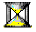
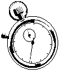

Australian Toolbook User Group



Timing Activities
Question: Does anyone know how to set up adding a clock that ticks down to whatever time the user completes draging objects to the correct spot? I guess this needs a button to start the drag action and the clock.
Answer: Check out the starttimer function in openscript. You can start with something like the following:
to handle buttonClick
system s_GameTime
s_GameTime = 60 -- set the clock to 60 seconds
get timerCapability()
if it is null
break
end
get timerStart("periodic",1000,1000,self)
timerID of self = it
end
to handle timernotify TimerID
system s_GameTime
if s_GameTime > 0
decrement s_GameTime
put s_GameTime into text of \
field TimeDisplay -- your display field
else
get timerStop(TimerID of self)
clear timerID of self
request "You have run out of time."
end
end
Timing your scripts Solution by Michael McKinnon
Using a function which is provided in the USER library of the Windows API, you can very easily measure the amount of time they take to execute. I will show you how.
Have you ever written a script that took a long time to execute? Maybe you were doing some sorting, or complex mathematics. Well, I know I have, and I use the following technique to time how long a handler takes, then I go back and make a few changes to see if I can make it quicker. You will be amazed at the speed increases you can get if you take the time to understand the basics of OpenScript and the way it works.
The function I am going to introduce you to is called getTickCount, but I prefer to call it gtc, so that is what I will call it. You can look up this function in the Windows API help file (WIN31WH.HLP) that came with Multimedia ToolBook. You will see that its sole purpose is to return a value which represents the number of milliseconds that have elapsed since Windows was started! I have no idea why this feature was implemented into Windows, but it does prove to be quite useful in this context. The gtc will wrap around to zero after approximately 49 days, so there is not much chance that it will ever wrap around (unless you know anyone who can get Windows to run for that long without a GPF? I rest my case).
So, lets say that I have a script and I want to time it, I place the following code around the previous code.
-- Script Timing: of course, this doesn’t
-- have to be a buttonClick handler.
to handle ButtonClick
-- link the USER library and declare
-- the gtc function
linkDLL "USER"
DWORD gtc=GetTickCount()
end
local DWORD t1, t2
-- set t1 to the current gtc
t1 = gtc()
{{{ THE SCRIPT I WANT TO TIME HERE }}}
-- set t2 to the current gtc
t2 = gtc()
-- unlink the USER lib. This is
-- optional as ToolBook does it automatically.
unlinkDLL "USER"
-- show the user how long it took
request "The time taken was" \
&&((t2-t1)/1000)&&"seconds."
End
As you can see, it is very easy to implement. You could easily separate the two sections into a couple of handlers in the book or a special system book of your own. Then you might only have to two lines around your code, and you could test multiple scripts easily.
There are so many small things than can affect the performance of a script. Here are only a few suggestions (briefly):
• Many people don’t realise that it takes about 10 times longer to update an Object Property than it does to update a Local Variable. The difference between the two is due to the fact that the User Property is static and gets saved when the book gets saved so it is part of the TBK file. Where is the TBK file stored? On Disk. Where is the Local Variable stored? In Memory. Which of the two is faster? Memory. [ 10 times slower is the worst case of writing to a text property of a field - setting a regular property or user property is faster, though local variables will still be fastest - Editor. ]
• More specifically, if you are writing text to a text field on the screen you are writing to an Object Property (text of …). If you are sorting text, or filling a text field line by line, send the results to a Local Variable first, then set the text of the object in one hit.
• Try and nest multiple functions in one line. For example, you might use something like Answer = (10*chartoansi(65)/lastanswer of self + text of field "foo"). This would be opposed to declaring the text of field "foo" in a previous line to a variable if you were only going to look up the Object Property once in the script.
• If you use a step loop to search for something, does your loop keep going, even though it may have found what it was looking for near the start? Use the while statement instead. Many people seem to become confused easily when it comes to deciding which type of loop to use. Study them carefully and try to learn what their advantages and disadvantages are.
Calculating the overhead of your timing code Solution by Ian A Smith
Timing tests like this are always very useful in deciding the best way to code an application. You mention the effect of the loop time verses the operation under test. One simple way to eliminate this is to execute the operation 16 times in each pass around the loop and divide the elapsed time by 16. 16 is not quite a random number. I found that at fewer than 16 operations loops influence the timing, whilst greater than 16 the loop had a diminishing and insignificant effect. You can experiment with this number if you like.
StopWatch Script Solution by Chris Carden

Question: 1. How do you set the starting time at "00:00:00" (for minutes, seconds and tenths of seconds)? The sysTime property is only accurate to seconds, not tenths of seconds.
Answer: You can use the Windows timeGetTime() API function to get the system time accurate to a few milliseconds. The example below reports the time between the buttonDown and buttonClick on a button.
to handle enterBook
linkDLL "mmSystem"
DWORD timeGetTime()
end
forward
end
to handle buttonDown
system startTime
startTime = timeGetTime()
end
to handle buttonClick
system startTime
endTime = timeGetTime()
request "Elapsed = " & endTime - startTime
end
Question: 2. How can I format the output to the field "elapsed" as "00:00:00" (minutes, seconds and tenths of a second)?
Answer: Because of the need for 1/10 second accuracy, I don't think the 'format' command will work for this. Below is a funciton that should return the formatted value. Multimedia ToolBook has some auxilary functions that would make this simpler; however, because I don't know if you're using the multimedia verions, these are written 'from scratch.' Place the function in your book script, and you can call it from anywhere. To test this, change the last line in the buttonClick handler above to:
request "Elapsed = " & \
stopWatchFromMillisec(endTime - startTime)
to get stopWatchFromMillisec argMS
-- Get Minutes
min = argMS div 60000
format number min as "00"
-- Get Seconds
remTime = argMS mod 60000
sec = remTime div 1000
format number sec as "00"
-- Get Hundredths of Seconds
remTime = remTime mod 1000
hndrth = remTime div 10
format number hndrth as "00"
return min & ":" & sec & ":" & hndrth
end
To access thousands more tips offline - download Toolbook Knowledge Nuggets